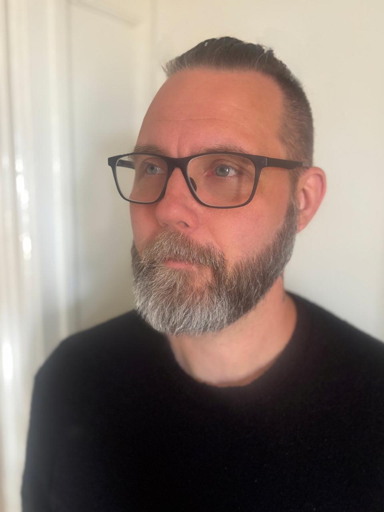

Machining
Turning & milling
CNC turning, CNC milling, large machining centres and an approximately four-metre bed milling machine. Experience spans operation, production programming, setups and manufacturing methods.
About Simontaival SubSystems
Software development as a natural extension of production engineering.

Simontaival SubSystems grew from manufacturing experience in Sweden and Norway, beginning in 1997.
Repeated production problems led to custom solutions involving CNC programming, macros, CAM, automation, calculations and internal software tools. Software development became another way to solve practical production problems.
The business brings industrial software and production engineering together, with experience from both machine operation and programming.
Experience
1997
Professional work has included operator, CNC operator, machinist, CNC programmer, CAM programmer and production engineer roles.
1999–2001
CNC studies included an additional year of specialisation involving AutoCAD. CNC was learned in an environment where operators commonly programmed and adjusted machining programs directly at the machine.
Around 2006
While working as a turner in Norway, largely self-taught CNC macro programming developed into macro systems and custom production logic. Some of these systems remain in use in real production.
Around 2007 onwards
GibbsCAM experience began around 2007, followed by formal one-to-one training while working as a programmer in Linköping. Current CAM experience centres on GibbsCAM and Mastercam, with previous Edgecam experience.
Recent work
Recent years have focused increasingly on production engineering, CAM, manufacturing methods and production problem solving.
Technical background
Machining
CNC turning, CNC milling, large machining centres and an approximately four-metre bed milling machine. Experience spans operation, production programming, setups and manufacturing methods.
Materials
Practical machining experience with nickel-based materials, including Inconel 625 and Inconel 718. The focus is on manufacturing methods and process optimisation.
Controls
Primary areas are Fanuc, Okuma, Heidenhain and ISO CNC programming. Broader previous professional experience includes Mazatrol / Mazak, Siemens and Haas.
Production background
Manufacturing related to pharmaceuticals, space, aerospace and general industry. Previous production work also involved Marab robot systems and Fanuc-related automation.
Engineering philosophy
A production solution is not finished because it works in theory.
It has to work reliably in production and make sense to the people using it. CNC macros, macro systems, production tools, software and manufacturing methods have been implemented and tested on the shop floor. Operators use these solutions in daily production; their feedback is part of development.
Contact
Consulting primarily available in Sweden and the Nordic region. Remote international assignments may also be possible depending on the project.
Describe the production problem or software enquiry by email.